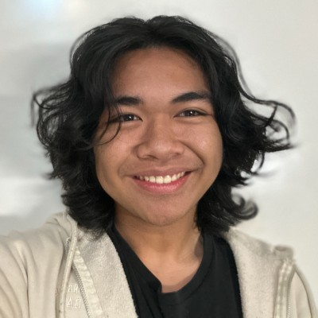

Hello! I'm a 3rd year electrical engineering student at UC Irvine. I like to design and build things when I have the spare time. My main interests lie in robotics and electromechanical systems. This website serves as a way to offer in-depth explanations and documentation of my projects. Some other facts about me: currently hard stuck silver in Rainbow Six Siege, Malcolm Todd is my favorite artist and probably my most listened to artist two years in a row, and I think beaches are overrated. If you are interested in contacting me, please do so at: andrei.lawrence.ayson@gmail.com, thank you!